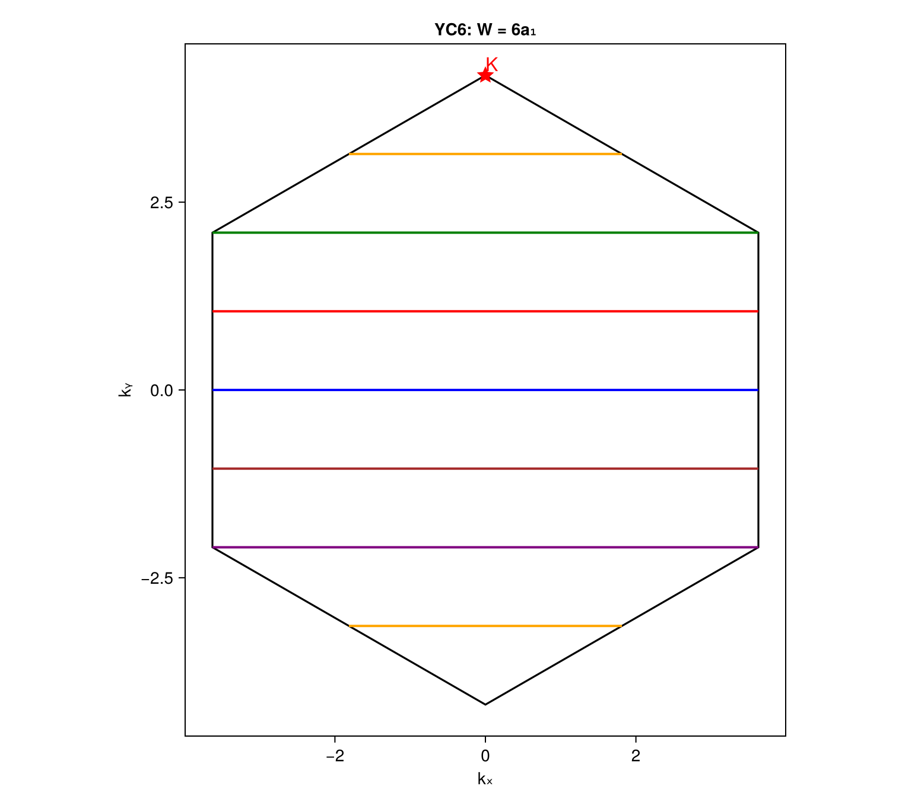
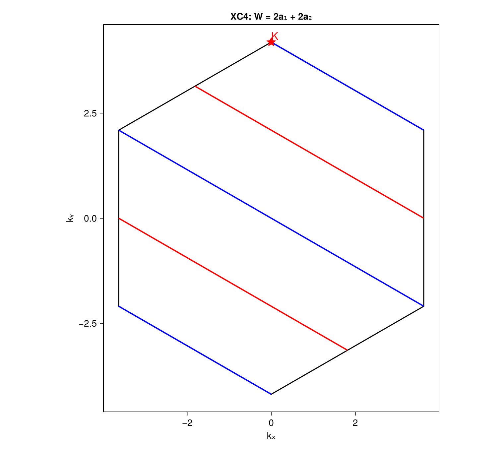
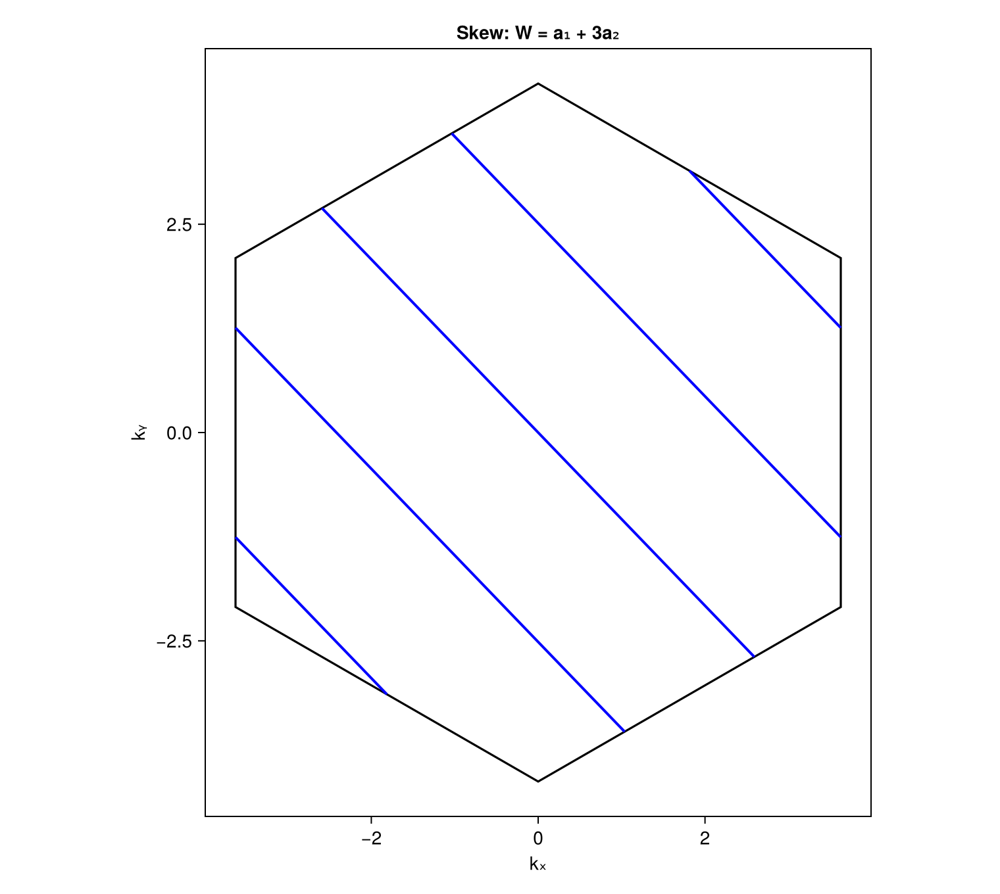
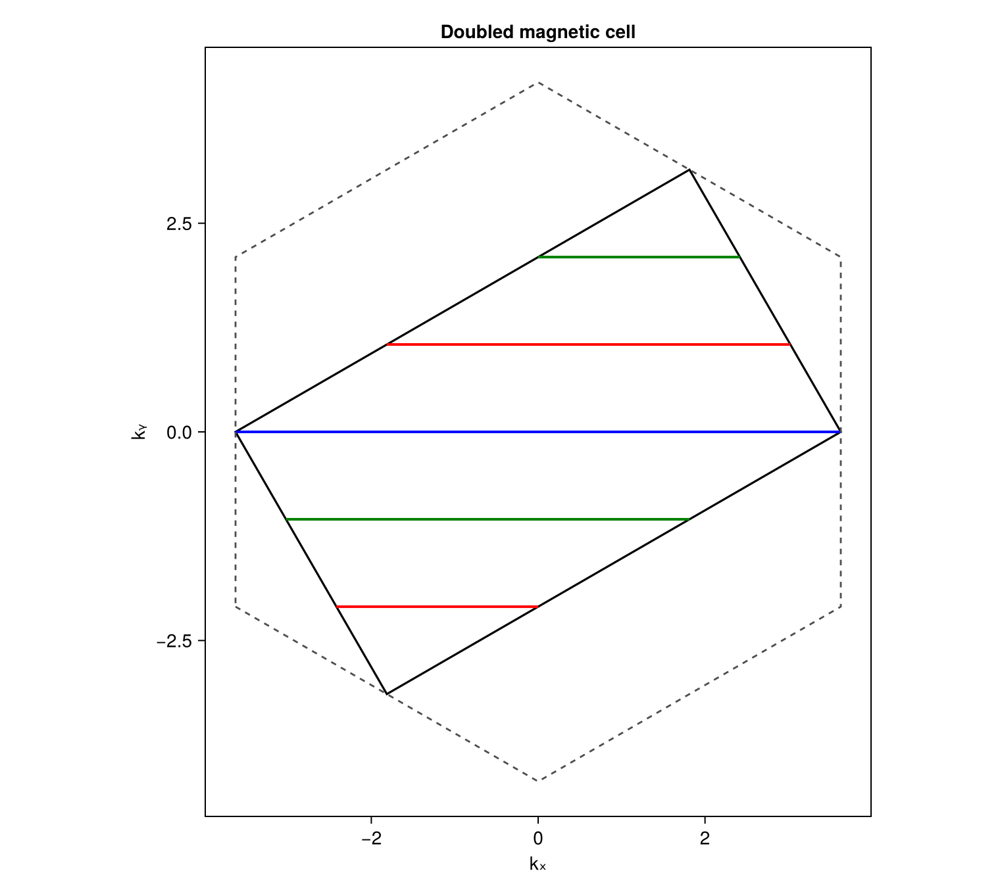
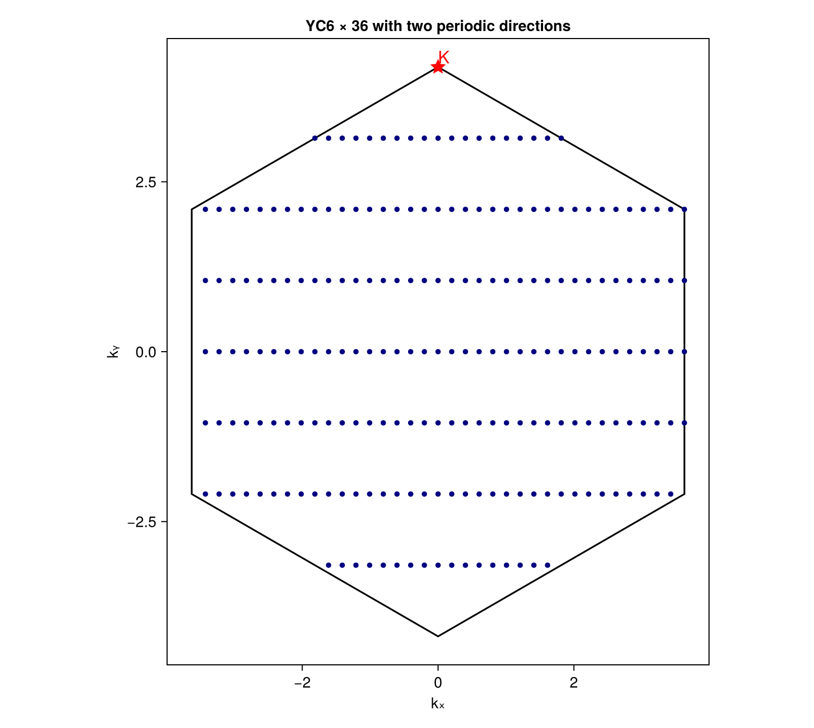

Momentum Cuts on Cylinders and Periodic Clusters
This tutorial shows how to construct the first Brillouin zone (BZ), generate the momentum lines allowed by a cylinder, distinguish independent sectors from folded line segments, include skew wrapping and twisted boundaries, use an enlarged magnetic cell, and enumerate discrete momenta when two directions are periodic.
The examples use a triangular lattice with
\[\mathbf a_1=(0,1),\qquad \mathbf a_2=\left(\frac{\sqrt3}{2},\frac12\right).\]
A YC6 cylinder has wrapping vector (\mathbf W=6\mathbf a1=(0,6)). A 6×36 cluster additionally uses (\mathbf T=36\mathbf a2) when the second direction is made periodic.
1. Geometry and Boundary Conditions
A two-dimensional Bravais cell is specified by its real-space primitive vectors. The reciprocal vectors are computed from
\[\mathbf b_i\cdot\mathbf a_j=2\pi\delta_{ij}, \qquad B=2\pi A^{-T},\]
where the columns of (A) and (B) are the real- and reciprocal-space primitive vectors. A momentum is written as
\[\mathbf k=\kappa_1\mathbf b_1+\kappa_2\mathbf b_2.\]
The dimensionless coordinates ((\kappa1,\kappa2)) are defined modulo integers. For a wrapping vector
\[\mathbf W=L_1\mathbf a_1+L_2\mathbf a_2\]
and boundary convention
\[\psi(\mathbf r+\mathbf W)=e^{i\Phi}\psi(\mathbf r),\]
the allowed momenta satisfy
\[L_1\kappa_1+L_2\kappa_2 =\ell+\frac{\Phi}{2\pi},\qquad \ell\in\mathbb Z.\]
One compact direction leaves continuous lines in the two-dimensional BZ. A second independent compact direction adds another quantization condition, and the two line families intersect at discrete points.
Wrapping Coefficients Are Not Cartesian Coordinates
TwistedTranslation((L1, L2)) expects integer coefficients in the Bravais basis, not a Cartesian displacement. For the present lattice,
TwistedTranslation((6, 0)) # W = (0, 6) in Cartesian coordinatesbecause (6\mathbf a1=(0,6)). By contrast, the Cartesian vector ([0,6]) must not be entered as (0, 6) unless the intended wrapping vector is (6\mathbf a2=(3\sqrt3,3)).
To convert a Cartesian wrapping vector, solve (A\mathbf n=\mathbf W) and check that (\mathbf n) is integer. A cylinder cannot close cleanly on the infinite Bravais lattice if the wrapping displacement is not a lattice translation.
2. Load the Package and Define the Cell
The geometry routines have no plotting dependency. Load CairoMakie only when figures are needed:
using DynamicalCorrelators
using CairoMakie
a1 = [0.0, 1.0]
a2 = [sqrt(3) / 2, 0.5]
cell = BravaisCell2D(a1, a2)cell.A and cell.B contain the real- and reciprocal-space vectors as columns. The first BZ is computed as the Wigner–Seitz cell of the reciprocal lattice:
bz_vertices = brillouin_zone(cell)The vertices are returned in counterclockwise order in Cartesian momentum coordinates.
3. YC6: Six Sectors and Seven Visible Segments
Define the cylinder and compute its independent lines and folded BZ segments:
W = TwistedTranslation((6, 0))
yc6 = MomentumGeometry(cell, W)
cuts = allowed_cuts(yc6)
segments = bz_segments(yc6)
length(cuts) # 6
length(segments) # 7For (\mathbf W=6\mathbf a_1), the quantization condition is
\[6\kappa_1=\ell.\]
Six independent representatives are
\[\kappa_1=\frac p6,\qquad p=0,1,\ldots,5,\]
with continuous (\kappa_2). The default colors follow this sector order:
| Sector | (\kappa_1) | Default color |
|---|---|---|
| 0 | (0) | blue |
| 1 | (1/6) | red |
| 2 | (1/3) | green |
| 3 | (1/2) | orange |
| 4 | (2/3) | purple |
| 5 | (5/6) | brown |
There are seven visible segments because the (p=3) line appears as two orange segments after folding into the first BZ. These are not two independent sectors. Every MomentumSegment retains its parent sector, and all segments from one sector use the same color. The black hexagon is only the BZ boundary.
Plot the zone, cuts, and a high-symmetry point:
K = [2 / 3, 1 / 3] # fractional reciprocal coordinates
fig = momentum_plot(yc6;
markers = Dict(:K => K),
title = "YC6: W = 6a₁",
)
save("yc6_cuts.png", fig)
For this (K) point,
\[6q_1=6\times\frac23=4\in\mathbb Z,\]
so it lies on the (p=4) cut. This can also be checked directly:
is_allowed(yc6, K) # true
nearest_cut(yc6, K).cut.sector # 4
nearest_cut(yc6, K).distance # approximately zeroBackground grid lines are disabled by default. Use tiled=true to display a 3×3 tiling of BZs and inspect how folded segments continue across zone boundaries.
4. YC and XC Are Geometry Shorthands, Separate from the Algorithm
The program does not branch on names such as YC or XC. It only uses the actual wrapping vector. Changing coordinate conventions does not change the physical answer if the wrapping vector is transformed consistently.
For example, an XC4 geometry in the present basis can be defined by
\[\mathbf W=2\mathbf a_1+2\mathbf a_2.\]
Its condition is
\[2(\kappa_1+\kappa_2)=\ell.\]
At (K=(2/3,1/3)),
\[2(q_1+q_2)=2\in\mathbb Z,\]
so XC4 can resolve this point exactly:
xc4 = MomentumGeometry(cell, TwistedTranslation((2, 2)))
length(allowed_cuts(xc4)) # 2
is_allowed(xc4, K) # true
fig = momentum_plot(xc4; markers=Dict(:K => K), title="XC4")
In contrast, YC4 has (\mathbf W=4\mathbf a_1), and
\[4q_1=\frac83\notin\mathbb Z.\]
Its structure-factor peak associated with 120° order can therefore occur only at the closest allowed momentum, not exactly at the two-dimensional (K) point. This illustrates why a circumference label such as L=4 is insufficient without the actual wrapping vector.
5. Skew Wrapping Changes Direction and Sector Count
A skew cylinder can have any nonzero integer wrapping coefficients. For example,
skew = MomentumGeometry(cell, TwistedTranslation((1, 3)))
cuts = allowed_cuts(skew)
segments = bz_segments(skew)
length(cuts) # 1
length(segments) # greater than oneHere
\[\mathbf W=\mathbf a_1+3\mathbf a_2, \qquad \kappa_1+3\kappa_2=\ell.\]
Since (\gcd(1,3)=1), there is only one independent sector. Its representative line can be chosen as (\kappa1+3\kappa2=0). The multiple blue segments in the first BZ all belong to this single sector.

The line direction differs from YC6 because allowed lines are perpendicular to the actual real-space wrapping vector. This is not a boundary twist: skew wrapping changes the wrapping vector, whereas a twist changes only the phase on the right-hand side.
More generally, with
\[g=\gcd(L_1,L_2),\qquad (n_1,n_2)=(L_1/g,L_2/g),\]
independent representatives can be written as
\[n_1\kappa_1+n_2\kappa_2 =\frac{p+\Phi/(2\pi)}{g},\qquad p=0,\ldots,g-1.\]
6. Twisted Boundaries and Flux
The boundary phase translates the cuts without rotating them. For YC6,
\[6\kappa_1=\ell+\frac{\Phi}{2\pi}, \qquad \kappa_1=\frac{\ell+\Phi/(2\pi)}6.\]
Periodic and antiperiodic boundaries are therefore
pbc = MomentumGeometry(cell, TwistedTranslation((6, 0); phase=0.0))
apbc = MomentumGeometry(cell, TwistedTranslation((6, 0); phase=pi))The antiperiodic cuts are shifted by (1/12), half the periodic line spacing.
For a spin flux (\theta) in a spin-1/2 electronic problem, the two spin species can be assigned opposite phases:
θ = 0.73
up = MomentumGeometry(cell, TwistedTranslation((6, 0); phase= θ / 2))
down = MomentumGeometry(cell, TwistedTranslation((6, 0); phase=-θ / 2))The spin-up and spin-down cuts move in opposite directions. In this convention, (\theta=2\pi) gives antiperiodic single-electron boundaries, while (\theta=4\pi) restores the original cuts. External and internal gauge phases can be added in phase.
7. Enlarged or Magnetic Unit Cells
An enlarged cell is defined by an integer transform (S):
\[A_{\mathrm m}=A_{\mathrm p}S, \qquad B_{\mathrm m}=B_{\mathrm p}S^{-T}.\]
Its columns contain the enlarged-cell vectors in parent-cell coordinates. For example,
S = [2 0;
0 1]
magnetic_cell = Supercell2D(cell, S)means
\[\mathbf a_{\mathrm m,1}=2\mathbf a_1, \qquad \mathbf a_{\mathrm m,2}=\mathbf a_2.\]
The real-space cell area is doubled and the magnetic BZ area is halved. Wrapping vectors are still entered in parent-cell coefficients:
magnetic = MomentumGeometry(magnetic_cell, TwistedTranslation((6, 0)))
cuts = allowed_cuts(magnetic) # 3 sectorsThe physical wrapping vector is (6\mathbf a1=3\mathbf a{\mathrm m,1}), so the enlarged cell has three independent circumferential translations. If a wrapping vector is not an integer translation of the enlarged cell, computing cuts or points throws an error rather than silently rounding the coefficients.
Plot the magnetic BZ with the parent BZ overlaid:
fig = momentum_plot(magnetic;
overlay_parent=true,
title="Doubled magnetic cell",
)
The solid polygon is the magnetic BZ and the dashed hexagon is the parent BZ. To clip the same physical lines against the parent BZ instead, use
fig = momentum_plot(magnetic; space=:parent)Fractional momenta are interpreted in parent coordinates by default. Use space=:magnetic when supplying magnetic-cell coordinates, or space=:cartesian for a Cartesian momentum.
A magnetic supercell is needed for a mean-field ansatz with an enlarged magnetic unit cell. Physical spin correlations are still commonly represented in the original lattice BZ; the two representations should not be conflated.
8. Two Periodic Directions: Unique Discrete Points
Add a second independent wrapping vector to quantize both directions:
W = TwistedTranslation((6, 0))
T = TwistedTranslation((0, 36))
periodic = MomentumGeometry(cell, W, T)
points = allowed_points(periodic)
length(points) # 216The two conditions are
\[6\kappa_1=\ell+\frac{\Phi_W}{2\pi}, \qquad 36\kappa_2=m+\frac{\Phi_T}{2\pi}.\]
For zero twists, the allowed grid is simply
\[\kappa_1=\frac{\ell}{6}, \qquad \kappa_2=\frac{m}{36}.\]
The implementation enumerates a finite integer domain, folds equivalent momenta, removes duplicates, and verifies that the number of points equals
\[N=\left|\det \begin{pmatrix} L_1&L_2\\ M_1&M_2 \end{pmatrix}\right|.\]
Each MomentumPoint contains:
fractional: coordinates in the working cell, folded to ([0,1)^2);parent_fractional: coordinates in the parent Bravais basis;cartesian: the momentum folded into the selected first BZ;sectors: the two compact-direction sector labels.
Plot the points with
fig = momentum_plot(periodic; markers=Dict(:K => K))
The two wrapping vectors must be linearly independent. For an open cylinder length, there is no second Bloch quantization condition: do not replace the open direction by (kx=2\pi m/Lx). The length then controls correlation distance and momentum resolution rather than supplying exact discrete Bloch points.
9. Parallelogram Patches and Rectangular Cylinder Cells
The real-space picture and the momentum quantization are related but distinct. For the primitive vectors used here,
\[\mathbf W=L\mathbf a_1=(0,L)\]
is vertical. A rectangular cylinder cell can be constructed with the horizontal lattice translation
\[\mathbf t=2\mathbf a_2-\mathbf a_1=(\sqrt3,0),\]
which satisfies (\mathbf W\cdot\mathbf t=0). The rectangle spanned by (\mathbf W) and (\mathbf t) contains (2L) primitive lattice sites. It is a rectangular supercell of the same triangular lattice, not a square Bravais lattice.
A patch generated by positive multiples of (\mathbf a1) and (\mathbf a2) is instead a parallelogram. Both constructions can describe the same bulk cylinder when the wrapping vector and bonds are the same. Consequently, they give the same allowed momentum lines.
Finite open clusters require more care: slanted and straight end cuts can contain different sites and boundary bonds, so their energies and edge correlations need not be identical. With two periodic directions, the second wrapping vector must also be compared directly; different second identifications can produce different discrete momentum sets.
10. Practical Checklist
- Define
BravaisCell2Dusing real-space primitive vectors. - Convert every wrapping displacement to integer Bravais coefficients.
- Use one
TwistedTranslationfor a cylinder and two for a periodic cluster. - Use
allowed_cutsfor independent sectors andbz_segmentsfor folded lines. - Check a target order wavevector with
is_allowedornearest_cut. - Add boundary phases for twists or flux; do not confuse them with skew wrapping.
- Use
Supercell2Dfor an enlarged mean-field or magnetic cell and verify that the wrapping vector remains a legal enlarged-cell translation. - Use
allowed_pointsonly for two independent periodic directions. - Use
momentum_plotafter loadingCairoMakie; load only the core package for numerical geometry without plotting.